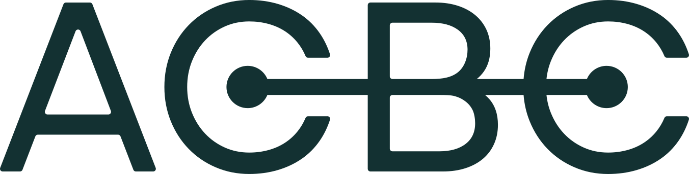
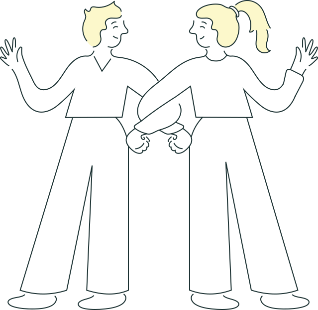
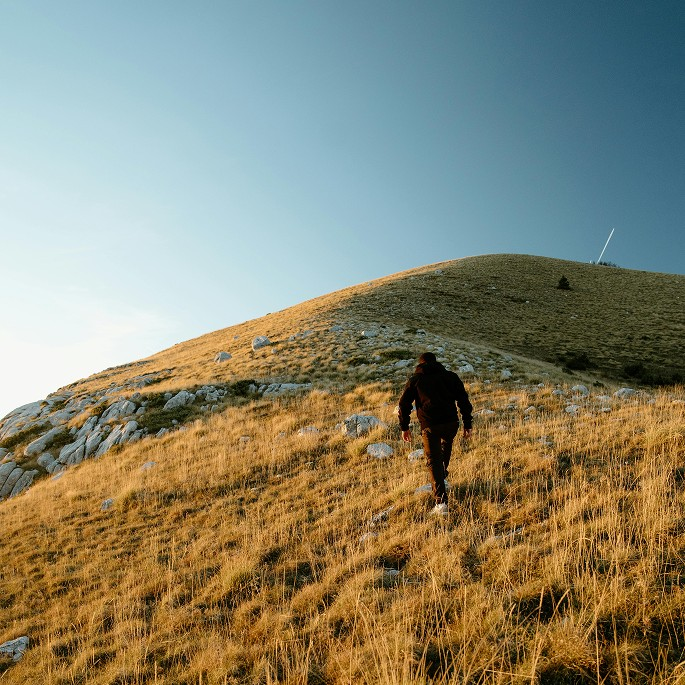
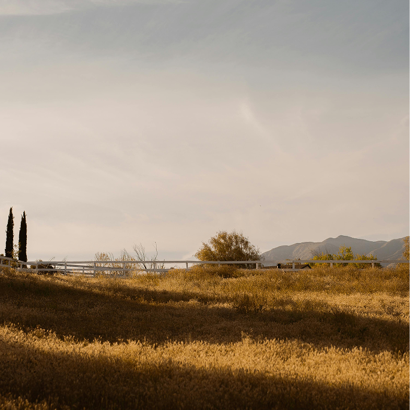
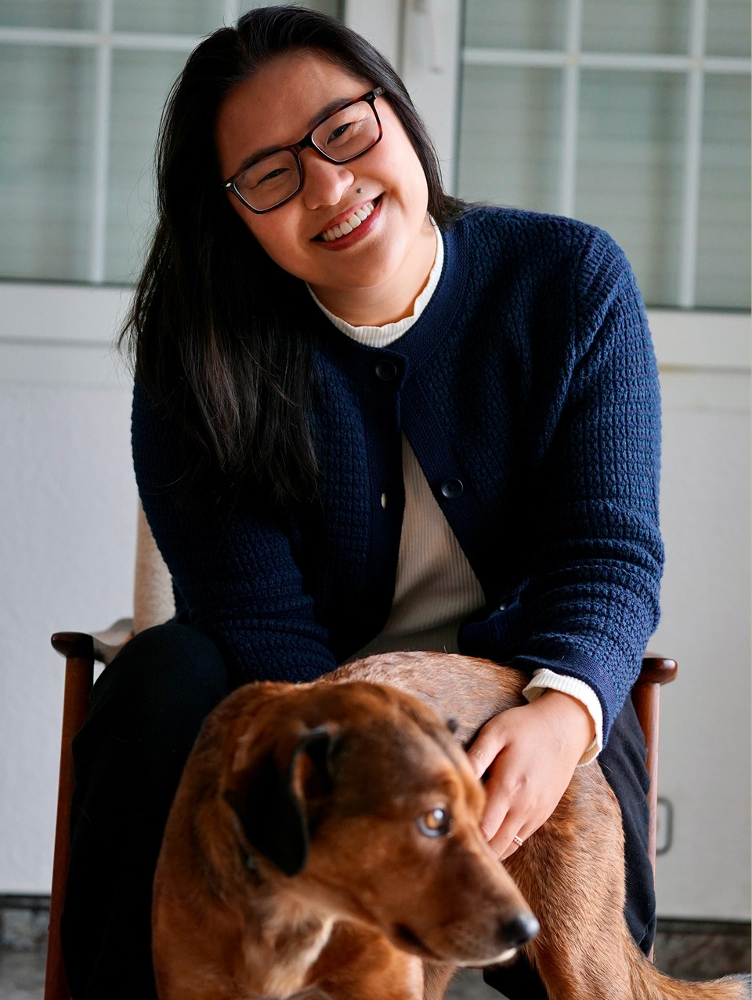

Ground in Context
The place, lived experiences, history, knowledge, and practical conditions surrounding the work

Tools and thought partnership for nonprofits, public agencies, and foundations working toward climate resilience, housing security, and health equity.
We help you make sense of what you are learning, see how the work connects, and clarify what should guide your next steps.

You might be leading a nonprofit program, carrying an initiative within a public agency, bringing partners together, or shaping how a foundation supports community-led work.
You’re listening to what your people are sharing, working through different priorities, and keeping things moving. But there isn’t always space to step back -- to understand what you’re learning, what has shifted, and what needs attention.
We work alongside you to bring community knowledge, local data, and your team’s learning into focus -- and help you work through what that means for the decisions ahead.
Everyday Justice Framework
Justice takes shape in the context we attend to, the relationships we build, and the systems that shape what is possible.
Our Everyday Justice framework brings four connected dimensions into view: grounding in context, weaving partnerships, sparking new patterns, and stitching the systems.
We return to these dimensions throughout the work -- to ask whose knowledge is shaping the direction, what relationships need attention, and what institutional conditions support or constrain what comes next
Tools to help you organize, explain, and guide the work.
Together, we develop principles, frameworks, and learning documents that help you clarify priorities, show how the work connects, and share what’s changed.
That might look like:
A Shared Compass > guiding principles and priorities.
A Living Map > a systems map, theory of change, or visual framework.
A Journey Log > a synthesis of learning, progress, and what is needed next.
Work through the questions that are hard to hold alongside the day-to-day.
When you’re carrying an initiative forward, there isn’t always space to weigh different priorities, connect what you’re learning, or prepare for the decisions ahead.
We bring research, synthesis, and strategic thinking into those questions with you. Through regular working sessions and focused review, we help you clarify what matters, consider your options, and shape practical next steps.
Explore how justice takes shape in everyday work.
Through keynotes, talks, and speaking engagements, we connect questions of justice with the decisions, relationships, and institutional practices that shape people’s everyday lives.
We make complex ideas accessible without losing their depth -- offering questions and perspectives that help people see their work differently and consider what that means in practice.
We care about the collective capacities we’re building for a more just, healthy, and resilient world.

Recognizing and supporting what holds people and the work.
Noticing the informal care already sustaining people, and considering what structures and resources would support it, rather than relying more.
Making community power part of how decisions happen.
Creating more room for the people most affected to define priorities, shape choices, and share in decisions about what happens next.

Carrying knowledge forward without losing where it comes from.
Keeping stories, lived expertise, and community ways of knowing present in the work, so they inform future decisions rather than disappear after a project ends.
Keeping other possibilities in view.
Making space to question familiar ways of working and explore alternatives within real constraints, while staying connected to a wider horizon of collective liberation.

I’ve spent my life between worlds. That in-between has given me a sharp eye for the invisible rules of belonging and power: who’s centered, who’s asked to adapt, and whose realities are pushed to the margins.
Working alongside public agencies, nonprofits, and communities, I’ve encountered another kind of in-between: the distance between what institutions recognize as knowledge and what people know through lived and embodied experience.
My research and practice ask what it takes for that knowledge to shape decisions and for institutions to respond to the realities of people’s housing, health, and care as the climate changes.
ACBC Studio is a place to create in that space -- to bring different forms of knowledge together, make connections visible, and shape tools and strategies with the people holding the work.
With a PhD completed cum laude and almost a decade of experience, I bring research depth and a practical understanding of the conditions this work happens within.